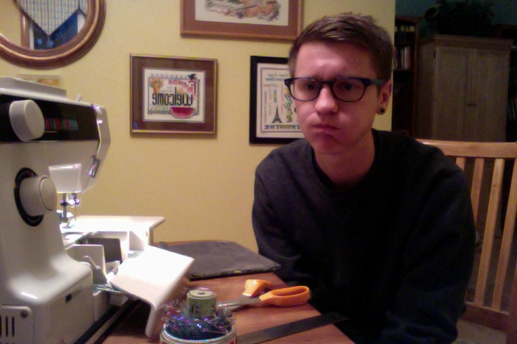

Hi, I'm Austin.
My parents didn't teach me to avoid strangers on the internet, and look where it's gotten me.

I'm a writer and illustrator living in Brooklyn and working at 87AM. I like old sci-fi paperbacks with cheesey covers and yellow pages that smell like dusty vanilla.
If you don't have a gel pen I will buy you one because I firmly believe that it is the world's greatest writing instrument. (Second place goes to Pentel brush pens, and third is like, a $1500 fountain pen or something.)
Let's chat about advertising & your favorite essay website & hand lettering & the best prosciutto hors d'oeuvre you've ever eaten.
@yo_powe
austinopowe@gmail.com
blog.austinpowe.com
linkedin
resume
I built this site completely from scratch, except for the wonderful easybox plugin by Vincent Wochnik. The site is hosted on Github here.
Thank you to these wonderful people who have mentored, inspired, or ate a donut with me when everything started to seem a little overwhelming: Ryan Frank, Deb Morrison, Julia Parris, Andy Rossback, Hannah Tabor, Larissa Pham, Ivar Vong, and Wolfpupy.